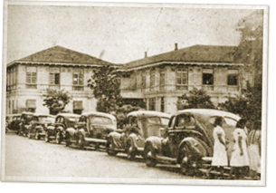

|
j
a v a s c r i p t |
January 16, 1942
Loudspeakers at the Burgos School have been loudly trumpeting news of Japanese triumphs. They follow the German pattern: nothing ever goes wrong for them. Well today at least no less than eight mysterious, loud detonations came from the direction of Camp Murphy, where a small fire also started.

Owners brought "hundreds and hundreds" of cars to the former Printing Bureau to apply for the special license. (La Vanguardia)
Today's the last day cars can run without the special pass for essential use. I'm trying to figure out how to keep mine in the best shape while laid up for an extended period. At the Escolta, the Japanese were having a picnic as regiments disbanded and reformed all day. Soldiers and officers displayed friendly relationships; the salutes were informal but careful all the same. A major called a unit of twenty to attention thrice and had them count off. Three were missing. They showed up at intervals of about half a minute each — the last one running to his position with a grin, waving his new wristwatch at the officer. Watches are considered luxury items; some wear more than one. I exchanged an old watch for a gold medal for little Paulie Meyer at the jewelers. Like most merchants, the storeowner apologized for giving change in military currency. Not all accept it, as Swiss restaurateur and good friend, Fred Schaer, found out. He gave his boy P20 military and sent him to Parañaque to buy eggs. No one would take the money. If the banks don’t reopen soon, I’ll be forced to sell one of my bikes to get some cash — at a tidy profit too now that the Japanese have taken over the bike shops. They have also cleaned out many hardware stores. It took fruitless days of searching before I found one still selling door locks. I bought the last three. |
|
|
|
|